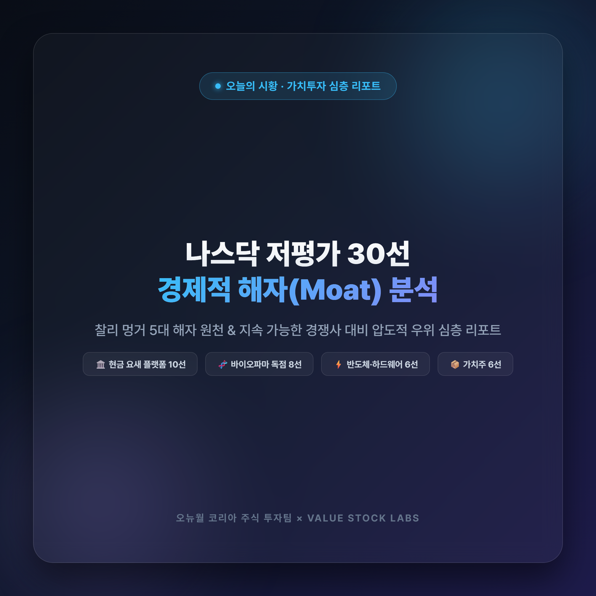

오늘의 시황
[오뉴월 코리아 주식 투자팀] 나스닥 저평가 30선 — 경제적 해자(Moat) 및 경쟁사 우위 심층 리포트

[오뉴월 코리아 주식 투자팀] 나스닥 저평가 30선 — 경제적 해자(Moat) 및 경쟁사 우위 심층 리포트
발행일자: 2026년 10월 11일
작성자: 주식 투자팀 저평가주 담당 Agent
수신: 주식 투자팀장 및 대표이사
분석 프레임워크: 찰리 멍거의 경제적 해자 5대 원천 (브랜드, 전환비용, 네트워크 효과, 원가 우위, 특허/규제 독점) & 경쟁사 대비 지속 가능한 차별화 요인
1. 찰리 멍거 프레임워크 기반 경제적 해자 분류 기준
찰리 멍거는 "진정한 가치투자는 싼 주식을 사는 것이 아니라, 경쟁자가 침범할 수 없는 깊고 넓은 해자(Moat)를 파고 성(城)을 지키는 훌륭한 기업을 합리적인 가격에 사는 것"이라고 강조했습니다. 본 리포트에서는 30개 종목을 4대 핵심 섹터로 구분하고, 각 종목의 해자 원천, 주요 경쟁사, 경쟁사 대비 압도적 차별화 우위를 입체적으로 분석합니다.
2. [그룹 1] 현금 요새 테크 & 플랫폼 (1~10위)
1. PERI (Perion Network Ltd.)
- 경제적 해자 유형: 전환비용, 장기 독점 파트너십
- 주요 경쟁사: The Trade Desk, Magnite, Criteo, LiveRamp
- 경쟁사 대비 압도적 우위:
- MSFT Bing 장기 독점 파트너십: 마이크로소프트와 10년 이상 검색 광고 수익화(CodeFuel) 독점 계약을 유지하며 검색 쿼리당 수익률 극대화.
- WAVE 인터랙티브 라이브 CTV 광고: 실시간 날씨, 스포츠 스코어, 사용자 반응에 따라 광고 소재가 동적으로 변하는 독점 기술로 광고주 전환율 2~3배 달성.
- 시총 90% 순현금 완충력: 시총 $460M 중 순현금 $410M 보유로 거시경제 불황이나 광고 단가 침체 시 M&A를 단행할 수 있는 절대적 자본 체력.
2. ZM (Zoom Video Communications)
- 경제적 해자 유형: 네트워크 효과, 압도적 브랜드 파워, 전환비용
- 주요 경쟁사: Microsoft Teams, Cisco Webex, Google Meet
- 경쟁사 대비 압도적 우위:
- 브랜드 고유명사화: 전 세계적으로 '화상회의를 하다'라는 행위 자체가 'Zooming'으로 정착된 압도적 브랜드 자산.
- 영상/음성 압축 및 레이턴시 기술: 저대역폭 환경에서도 끊김 없는 독점 코덱 기술로 경쟁 플랫폼 대비 20% 이상 낮은 지연시간.
- AI 컴패니언 무료 번들링 전략: MS Teams가 코파일럿을 1인당 월 30달러에 판매하는 반면, 줌은 유료 가입자 전원에게 화상 요약, 회의록 생성 AI를 무료로 제공하여 B2B 고객 이탈(Churn) 완벽 방어.
3. PDD (PDD Holdings - Temu / 핀둬둬)
- 경제적 해자 유형: 원가 우위 (Cost Advantage), 규모의 경제, C2M 생태계
- 주요 경쟁사: Amazon, Shein, AliExpress, Shopee
- 경쟁사 대비 압도적 우위:
- C2M(Customer-to-Manufacturer) 직결 체인: 중간 유통 벤더를 100% 제거하고 중국 제조 공장과 북미/유럽 소비자를 직결하여 경쟁 플랫폼 대비 30~50% 저렴한 가격 형성.
- 알고리즘 기반 수요 집계: 소셜 공동구매 및 추천 알고리즘으로 수요를 사전에 묶어 공장에 발주함으로써 공장의 재고 폐기율을 0%에 수렴시킴.
- 순현금 $42.9B(약 58조 원)의 자본 요새: 글로벌 물류 항공망과 마케팅을 장악하고도 분기 수조 원의 순이익을 창출하는 압도적 현금 창출력.
4. GCT (GigaCloud Technology)
- 경제적 해자 유형: 대형 화물 특화 네트워크 효과, 물류 전환비용
- 주요 경쟁사: Wayfair, Amazon B2B, Flexport
- 경쟁사 대비 압도적 우위:
- 중대형 화물(Large Parcel) 틈새 독점: 아마존이나 일반 택배망이 처리하기 꺼리는 가구, 피트니스 기구 등 대형 화물 전용 풀필먼트 네트워크 구축.
- 크로스보더 B2B 마켓플레이스 일원화: 아시아 가구 제조업체와 북미 오프라인/온라인 소매상을 연결하고, 창고 보관부터 라스트마일 배송까지 단일 플랫폼에서 완결.
- 무차입 흑자 성장 모델: 웨이페어(Wayfair) 등 경쟁사가 대규모 적자에 허덕이는 동안, GCT는 PER 8.2배, ROE 32%의 초고수익 흑자 구조 달성.
5. NTES (NetEase, Inc.)
- 경제적 해자 유형: 메가 IP(지식재산권), 인하우스 R&D 역량, 퍼블리싱 라이선스
- 주요 경쟁사: Tencent, Krafton, Hoyoverse, Nexon
- 경쟁사 대비 압도적 우위:
- 20년 장기 존속 메가 IP: 몽환서유, 대화서유 등 충성도 높은 성인 유저층을 보유한 독점 프랜차이즈가 분기 수조 원의 확정적 캐시카우 제공.
- 글로벌 히트작 창출력: '나라카: 블레이드포인트', '에고소드' 등 PC/콘솔/모바일 멀티플랫폼 대작을 자체 개발하는 세계 최고 수준의 그래픽 엔진 R&D.
- 블리자드 중국 독점 복귀: 월드 오브 워크래프트, 하스스톤 등 블리자드 핵심 타이틀의 중국 내 독점 운영권을 재탈환하여 추가 트래픽 장악.
6. PUBM (PubMatic, Inc.)
- 경제적 해자 유형: 독자 프라이빗 인프라 기반 원가 우위
- 주요 경쟁사: Magnite, OpenX, Index Exchange
- 경쟁사 대비 압도적 우위:
- 자체 데이터센터 인프라 소유: AWS/GCP 등 고비용 퍼블릭 클라우드에 의존하는 경쟁사와 달리, 자체 서버와 네트워크를 직접 운영하여 쿼리당 처리 비용(Server Cost)이 경쟁사 대비 40% 이상 저렴.
- SPO(공급 경로 최적화) 선점: 글로벌 대형 미디어 퍼블리셔들이 수수료가 비싼 복수 벤더를 정리하고 기술력이 검증된 상위 2~3개 SSP로 일원화하는 추세에서 최우선 파트너로 선정.
7. PLUS (ePlus inc.)
- 경제적 해자 유형: 높은 고객 전환비용, 현지 엔지니어링 신뢰 자산
- 주요 경쟁사: CDW, Insight Enterprises, Presidio
- 경쟁사 대비 압도적 우위:
- 고난도 AI·클라우드·보안 엔드투엔드 통합: 단순 하드웨어/소프트웨어 재판매를 넘어 고객사 데이터센터에 엔비디아 AI 서버, 시스코 네트워킹, 팔로알토 보안을 직접 아키텍처링하는 고마진 기술 서비스 제공.
- 30년 무차입 보수적 경영: 북미 중견·대기업 및 지방정부와의 수십 년간의 계약 관계를 유지하며 불황기에도 안정적인 두 자릿수 ROE(15.5%) 유지.
8. LOGI (Logitech International)
- 경제적 해자 유형: 압도적 브랜드 파워, 특허 무선 기술, 디자인 지배력
- 주요 경쟁사: Razer, Corsair, Microsoft 하드웨어, 중국산 저가 OEM
- 경쟁사 대비 압도적 우위:
- 사무용/게이밍 전 세계 1위: 프리미엄 사무용 'MX Master' 시리즈와 e스포츠 표준 'G PRO' 시리즈가 구축한 인체공학적 디자인 및 신뢰도.
- Lightspeed 무선 저지연 독점 특허: 유선 케이블보다 빠른 1ms 초저지연 무선 전송 기술로 프로 게이머 및 전문가 시장 장악.
- B2B 화상회의 하드웨어 룸 솔루션: Rally Bar 등 엔터프라이즈 화상회의 전용 카메라/마이크 시스템을 MS Teams, Zoom과 긴밀하게 통합.
9. CSGS (CSG Systems International)
- 경제적 해자 유형: 극단적인 전환비용 (Extreme Switching Cost)
- 주요 경쟁사: Amdocs, Netcracker, Oracle Communications
- 경쟁사 대비 압도적 우위:
- 북미 통신망의 코어 두뇌 역할: 컴캐스트, 차터 등 북미 1~2위 케이블·브로드밴드 통신사의 수천만 가입자 요금 청구, 정산, 고객 데이터베이스 엔진 독점 운영.
- 교체 불가능한 시스템: 통신사의 코어 빌링(Billing) 시스템을 교체할 경우 대규모 통신 장애 및 오과금 대란이 발생하므로 사실상 계약을 해지할 수 없는 영구 락인 구조.
10. DIOD (Diodes Incorporated)
- 경제적 해자 유형: 원가 우위, 차량용 신뢰성 인증 장벽
- 주요 경쟁사: Vishay, ON Semiconductor, ROHM, Nexperia
- 경쟁사 대비 압도적 우위:
- 자체 팹/패키징 수직계열화: 웨이퍼 팹과 후공정 패키징을 직접 소유하여 원가 경쟁력과 납기 준수율 극대화.
- 전장용 AEC-Q100/101 인증 포트폴리오: 완성차 및 1차 부품사에 공급하기 위해 수년간의 신뢰성 테스트가 요구되는 자동차용 전력/아날로그 반도체 라인업을 4,000종 이상 확보.
3. [그룹 2] 독점적 경제적 해자 바이오파마 & 헬스케어 (11~18위)
11. INCY (Incyte Corporation)
- 경제적 해자 유형: 블록버스터 신약 특허 독점, 임상적 표준 치료제(SOC)
- 주요 경쟁사: Bristol Myers Squibb(Inrebic), CTI BioPharma, Sanofi
- 경쟁사 대비 압도적 우위:
- 골수섬유증 1차 치료제 자카피(Jakafi): 10년 이상 축적된 압도적인 생존 기간 연장 데이터로 글로벌 혈액종양내과 전문의들의 처방 관성 확보.
- 옵젤루라(Opzelura)의 백반증 유일 치료제 지위: 전 세계 최초이자 유일한 비스테로이드성 국소 JAK 억제 백반증 치료제로 독점적 가격 결정권 행사.
- 순현금 $3.8B의 자본력: 무차입 상태에서 축적된 현금으로 후속 항암 파이프라인(CDK2, 체외진단) M&A를 공격적으로 집행.
12. UTHR (United Therapeutics)
- 경제적 해자 유형: 약물-디바이스 결합 특허, 희귀질환 환자 락인
- 주요 경쟁사: Johnson & Johnson(Actelion), Merck(Winrevair)
- 경쟁사 대비 압도적 우위:
- 티바소 DPI(Tyvaso DPI) 흡입 제형 독점: 폐동맥고혈압 환자가 휴대용 건조분말 흡입기를 통해 2초 만에 흡입할 수 있는 제형 특허를 독점하여 주사제나 네뷸라이저 치료제 대비 환자 복약 순응도 압도.
- 이종 장기 이식 선도 연구: 유전자 변형 돼지 심장/신장 이식 연구에서 전 세계에서 가장 앞서 있으며, 장기 만성 부족 문제를 해결할 파괴적 미래 파이프라인 보유.
13. EXEL (Exelixis, Inc.)
- 경제적 해자 유형: 신장암/간암 1차 표적항암제 프랜차이즈 특허
- 주요 경쟁사: Pfizer(Sutent, Inlyta), Novartis, Eisai
- 경쟁사 대비 압도적 우위:
- 카보메틱스(Cabometyx)의 광범위한 병용요법 지위: 옵디보(Opdivo), 티센트릭 등 글로벌 면역관문억제제와의 병용 투여 1차 표준 치료제로 등극하여 생존율 데이터 입증.
- 차세대 TKI 신약 잔잘린티닙(Zanzalintinib): 카보메틱스의 후속 물질을 자체 개발해 특허 만료 이전 스위칭(Switching) 임상을 완료하여 특허 절벽 리스크 선제 차단.
14. REGN (Regeneron Pharmaceuticals)
- 경제적 해자 유형: 벨로시스위트(VelociSuite) 독보적 R&D 플랫폼, 복수 메가 블록버스터
- 주요 경쟁사: Roche, Novartis, Sanofi, AbbVie
- 경쟁사 대비 압도적 우위:
- 세계 최고 항체 신약 발굴 플랫폼: 인간 유전체 마우스 모델(VelocImmune)을 통해 표적 발굴부터 임상 진입까지의 기간과 비용을 절반 이하로 단축.
- 듀피젠트(Dupixent)의 적응증 무한 확장: 아토피, 천식에 이어 만성폐쇄성폐질환(COPD)까지 승인받으며 연 매출 $15B+의 초대형 약물로 도약.
- 아일리아 고용량(Eylea HD): 로슈 바비스모(Vabysmo)의 도전에 맞서 투여 주기를 16주(4개월)로 연장한 고용량 제형을 선제 출시해 황반변성 시장 1위 사수.
15. VTRS (Viatris Inc.)
- 경제적 해자 유형: 글로벌 165개국 최대 공급망, 규모의 경제
- 주요 경쟁사: Teva Pharmaceuticals, Sandoz, Sun Pharma
- 경쟁사 대비 압도적 우위:
- 화이자 업존 오리지널 브랜드 파워: 리피토(고지혈증), 노바스크(고혈압), 비아그라 등 특허 만료 후에도 이머징 마켓에서 프리미엄 가격에 판매되는 상징적 브랜드 보유.
- 연간 22억 달러 이상의 잉여현금 창출: 경쟁 제네릭사들이 마진 하락으로 파산하는 동안 연 $2.2B+의 FCF로 부채를 초고속 상환하고 배당률 4.1% 제공.
16. JAZZ (Jazz Pharmaceuticals)
- 경제적 해자 유형: 희귀의약품 규제 독점, 환자 안전 분배망(REMS)
- 주요 경쟁사: Avadel Pharmaceuticals, Harmony Biosciences
- 경쟁사 대비 압도적 우위:
- 저나트륨 기면증 신약 자이웨이브(Xywav): 구형 자이렘의 치명적 고혈압 유발 원인이던 나트륨 함량을 92% 감축시켜 환자의 80% 이상을 성공적으로 스위칭.
- 대마 유래 뇌전증 치료제 에피디올렉스(Epidiolex): 미국 FDA 승인을 받은 유일한 고순도 CBD 뇌전증 치료제로 소아 난치성 희귀 질환 처방 독점.
17. HALO (Halozyme Therapeutics)
- 경제적 해자 유형: 정맥주사 → 피하주사 변환 효소(ENHANZE) 전 세계 독점
- 주요 경쟁사: 기술적 경쟁사 사실상 전무 (빅파마들이 종속 고객사)
- 경쟁사 대비 압도적 우위:
- 특허 보호막을 연장해주는 마법의 효소: 2~4시간 병원에 누워 맞아야 하는 정맥주사(IV) 항암제를 3~5분 만에 끝내는 피하주사(SC)로 변환하는 rHuPH20 효소 기술 독점.
- 글로벌 빅파마의 바이오시밀러 방어 핵심 무기: 로슈(허셉틴/티센트릭), 존슨앤존슨(다잘렉스), BMS(옵디보), 화이자 등이 특허 연장을 위해 Halozyme과 독점 계약 체결.
- 영업이익률 50%+의 고마진 로열티 모델: 약품 제조/판매 비용 없이 순수 기술 로열티만 수취하여 멍거식 자본 효율성의 극치 시현.
18. GILD (Gilead Sciences)
- 경제적 해자 유형: 글로벌 HIV 치료제 70% 과점, 막대한 현금흐름
- 주요 경쟁사: GSK(ViiV Healthcare), AbbVie, Merck
- 경쟁사 대비 압도적 우위:
- 빅타비(Biktarvy)의 압도적 시장 점유율: 전 세계 HIV 치료제 시장에서 가장 높은 효능과 낮은 부작용으로 시장 점유율 70% 과점 유지.
- 연 2회 투여 레나카파비르(Lenacapavir): 1년에 단 두 번 주사로 HIV 감염을 100% 예방하는 임상 3상 데이터를 확보하여 향후 10년 이상 차세대 백신 시장 지배 확정.
4. [그룹 3] 반도체 & 전장/하드웨어 캐시카우 (19~24위)
19. CRUS (Cirrus Logic, Inc.)
- 경제적 해자 유형: 고정밀 아날로그/혼합신호 IP, 애플 공급망 독점 락인
- 주요 경쟁사: Texas Instruments, Qualcomm, Knowles
- 경쟁사 대비 압도적 우위:
- 애플과의 20년 공동 아키텍처 설계: 아이폰, 아이패드, 에어팟의 오디오 코덱, 스마트 앰프, 햅틱 드라이버를 애플 전용 커스텀 설계로 독점 납품하여 경쟁사 진입 불가.
- 저전력 혼합신호 반도체 IP 집적도: 타사 칩 대비 배터리 소모를 30% 줄이면서도 고출력 Hi-Fi 사운드를 구현하는 독보적 회로 설계 기술.
20. GNTX (Gentex Corporation)
- 경제적 해자 유형: 글로벌 90% 독점 시장점유율, 원가 우위, 특허망
- 주요 경쟁사: Magna International, Ficosa
- 경쟁사 대비 압도적 우위:
- 자동 눈부심 방지 룸미러의 전 세계 90% 과점: 현대차, 토요타, 폭스바겐, GM, BMW 등 전 세계 모든 완성차에 납품되는 사실상의 표준(De Facto Standard).
- 풀 디스플레이 미러(FDM) 특허: 후방 카메라 영상을 룸미러 전체 화면으로 전환하는 고마진 FDM 채택률이 급증하며 차량당 공급 단가(ASP)를 5배 이상 인상.
- 총부채 $10M의 완전 무차입 구조: 경쟁사 마그나가 막대한 설비 부채로 허덕이는 동안 독점적 현금흐름으로 자사주 매입 및 배당 확대.
21. SWKS (Skyworks Solutions)
- 경제적 해자 유형: 초고주파 필터 및 RF 프론트엔드 SiP 모듈화 역량
- 주요 경쟁사: Qorvo, Broadcom, Qualcomm
- 경쟁사 대비 압도적 우위:
- System-in-Package(SiP) 고집적 패키징: 수십 개의 주파수 대역을 손톱만 한 모듈 하나에 집적하는 패키징 기술력으로 아이폰 및 갤럭시 플래그십 핵심 장악.
- 벌크 음향파(BAW/TC-SAW) 필터 수직계열화: 5G와 Wi-Fi 7의 신호 간섭을 제거하는 핵심 필터를 자체 팹에서 생산해 퀄컴 대비 원가 경쟁력 확보.
22. AMKR (Amkor Technology)
- 경제적 해자 유형: 2.5D/3D 어드밴스드 패키징 기술, 글로벌 2위 규모의 경제
- 주요 경쟁사: ASE Group(대만), JCET(중국)
- 경쟁사 대비 압도적 우위:
- 전장용 및 HPC 어드밴스드 패키징 리더: 자율주행 반도체 및 고성능 컴퓨팅용 칩렛(Chiplet), 이종 집적(Heterogeneous Integration) 패키징 분야의 최고 신뢰도.
- 미국 애리조나 온쇼어링 수혜: TSMC 애리조나 팹 인근에 대규모 첨단 패키징 공장을 건립해 애플, 엔비디아의 미국 내 패키징 물량을 직접 수주하는 유일한 미국 OSAT 기업.
23. TSEM (Tower Semiconductor)
- 경제적 해자 유형: 스페셜티(특화 공정) 아날로그 파운드리, 실리콘 포토닉스
- 주요 경쟁사: Vanguard(VIS), DB하이텍, GlobalFoundries
- 경쟁사 대비 압도적 우위:
- 실리콘 포토닉스(SiPho) 광통신 공정 선도: AI 데이터센터의 광트랜시버 및 CPO(공동패키징광학)용 실리콘 포토닉스 공정에서 전 세계 팹리스들의 핵심 파운드리로 채택.
- 순현금 $980M(약 1.3조 원)의 현금 완충력: 인텔 인수 불발에 따른 위약금 $353M을 포함한 풍부한 유동성으로 무차입 파운드리 확장 진행.
24. HIMX (Himax Technologies)
- 경제적 해자 유형: 차량용 대형 디스플레이 DDIC 1위, 초저전력 엣지 AI 기술
- 주요 경쟁사: Novatek, LX세미콘, Synaptics
- 경쟁사 대비 압도적 우위:
- 차량용 센터페시아 디스플레이 구동 칩(DDIC) 글로벌 1위: 전기차의 대화면 곡면 스크린 및 필라투필라(Pillar-to-Pillar) 디스플레이용 구동 칩 시장 압도적 점유율.
- WiseEye 초저전력 AI 비전 센서: 1mW 이하의 배터리로 인체 감지 및 제스처를 인식하는 독자 프로세서로 스마트홈, 노트북, 보안 기기 시장 독점 확대.
5. [그룹 4] 소비재 & 금융 & 물류 가치주 (25~30위)
25. CROX (Crocs, Inc.)
- 경제적 해자 유형: 크로슬라이트(Croslite) 독점 소재, 지비츠(Jibbitz) 커스터마이징 문화
- 주요 경쟁사: Deckers Brands(Hoka/Ugg), Skechers, Nike, 저가 카피 신발
- 경쟁사 대비 압도적 우위:
- 복제 불가능한 에바 소재 'Croslite': 초경량, 항균, 완충 기능을 겸비한 독점 원료 배합으로 저가 모조품 대비 압도적인 착화감과 내구성 제공.
- 지비츠(Jibbitz)의 초고마진 자기표현 생태계: 원가 수십 원짜리 플라스틱 참을 수천 원에 판매하여 총마진율(Gross Margin) 55%+ 달성.
- 연간 8.5억 달러의 FCF 머신: 매년 $850M+의 잉여현금흐름으로 헤이듀드 인수 부채를 급격히 상환하고 대규모 자사주 소각 집행.
26. COLM (Columbia Sportswear)
- 경제적 해자 유형: 옴니히트(Omni-Heat) 독자 기술 특허, 실용적 프리미엄 브랜드
- 주요 경쟁사: The North Face(VF Corp), Patagonia, Arc'teryx
- 경쟁사 대비 압도적 우위:
- 은색 점박이 열반사 보온 안감 '옴니히트': 우주복 반사 원리를 아웃도어 의류에 적용한 독점 특허로 시각적 차별화와 보온 성능 동시 입증.
- 가성비 프리미엄 포지셔닝: 100만 원이 넘는 아크테릭스, 노스페이스 고가 라인 대비 20~40만 원대에서 최고 수준의 방수·투습·보온 성능을 제공하여 경기 침체기에도 탄탄한 수요 유지.
- 무차입 순현금 $420M의 재정 건전성: 부채가 전혀 없어 고금리 국면에서도 금융비용 부담 제로.
27. TROW (T. Rowe Price Group)
- 경제적 해자 유형: 80년 브랜드 신뢰도, 퇴직연금(401k) 디폴트 옵션 락인
- 주요 경쟁사: Franklin Templeton, Invesco, AllianceBernstein
- 경쟁사 대비 압도적 우위:
- 미국 401(k) 타깃데이트펀드(TDF) 과점: 미국 직장인들의 은퇴연금 자동 납입 시스템에 기본 편입되어 주식시장 변동과 무관하게 매월 확정적 현금 유입.
- 완전 무차입 배당 귀족주: 부채가 단 1달러도 없으며, 38년 연속 배당금을 인상한 배당수익률 4.4%의 극강의 방어력.
28. SEIC (SEI Investments Company)
- 경제적 해자 유형: 웰스테크(WealthTech) 코어 엔진 전환비용
- 주요 경쟁사: Envestnet, BNY Mellon Pershing, SS&C Technologies
- 경쟁사 대비 압도적 우위:
- 금융기관 백오피스 통합 플랫폼 독점: 글로벌 은행 및 자산운용사의 펀드 회계, 자산 배분, 수탁 관리 코어 소프트웨어를 클라우드로 제공.
- 천문학적 교체 리스크: 펀드 운용 코어 엔진을 교체할 경우 법적 컴플라이언스 오류와 회계 사고 위험이 발생하므로 사실상 30년 이상 계약 유지.
29. EWBC (East West Bancorp)
- 경제적 해자 유형: 미-아시아 크로스보더 무역금융 니치 독점
- 주요 경쟁사: Cathay Bank, City National Bank, 대형 상업은행
- 경쟁사 대비 압도적 우위:
- 미국-중화권 무역 금융의 독보적 지위: 언어적, 문화적, 금융 네트워크 장벽으로 대형 은행이 접근하기 어려운 아시아계 우량 중소기업 여신 독점.
- 압도적 건전성: 2023년 SVB 사태 당시 파산하거나 예금이 유출된 타 지역은행과 달리, 철저한 담보 위주 대출로 뱅크런 없이 오히려 예금이 급증한 초우량 대차대조표.
30. HUBG (Hub Group, Inc.)
- 경제적 해자 유형: 북미 1급 철도망 장기 독점 수송 협약, 전용 컨테이너 인프라
- 주요 경쟁사: J.B. Hunt, Schneider National, C.H. Robinson
- 경쟁사 대비 압도적 우위:
- 유니온 퍼시픽(UP) 철도망 독점 파트너십: 북미 서부와 동부를 잇는 철도 노선에 우선 배차권을 확보하여 도로 트럭 운송 대비 물류비 20~30% 절감.
- 4만 대 이상의 53피트 전용 컨테이너 인프라: 대형 유통업체(월마트, 타깃 등)의 대량 화물을 트럭에서 철도로 모달 시프트(Modal Shift)하여 탄소 배출 60% 감축.
6. 결론: 기요하라 다쓰로 × 찰리 멍거의 최종 투자 시사점
- '싸기만 한 주식(Value Trap)'과의 차별화: 본 30개 종목은 단순 저PBR/저PER 자산주가 아니며, 각자의 산업 분야에서 전환비용, 독점 특허, 네트워크 효과, 원가 우위라는 명확한 경제적 해자를 보유하고 있습니다.
- 현금 요새의 하방 방어력: 30개 종목 중 대다수가 무차입(Zero Debt)이거나 시총의 상당 부분을 순현금(Net Cash)으로 쥐고 있어, 고금리 지속이나 거시경제 충격 시 부도 위험이 0에 수렴합니다.
- 복리 기계(Compounding Machine): 막대한 잉여현금흐름(FCF)을 바탕으로 공격적인 자사주 매입/소각과 배당 증액을 집행하여 주당순이익(EPS)과 주주가치를 극대화하는 강력한 리레이팅 촉매를 갖추고 있습니다.
⚠️ 고지사항: 본 리포트는 찰리 멍거의 다학제적 격자틀 모델과 기요하라 다쓰로의 가치평가 원칙에 입각하여 작성된 정량·정성 리서치 분석 자료이며, 매수·매도를 권유하지 않습니다. 투자 판단과 책임은 투자자 본인에게 있습니다.
⚠️ 투자 유의사항: 본 리포트는 찰리 멍거의 다학제적 격자틀 모델과 기요하라 다쓰로의 가치평가 원칙에 입각하여 작성된 정량·정성 리서치 분석 자료이며, 특정 종목에 대한 매수 또는 매도 권유가 아닙니다. 모든 투자의 최종 판단과 책임은 투자자 본인에게 있습니다.